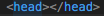
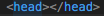
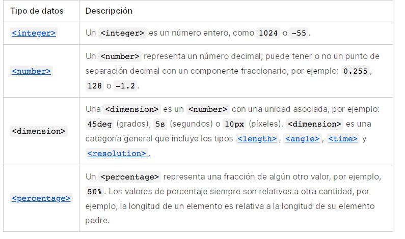

El proposito de este sitio web es dar a conocer conceptos básicos de HTML como lo son etiquetdas básicas junto con sus atributos y valores.
De esta manera se busca impulsar y fortalecer el aprendizaje de HTML en la población estudiantil
Etiquetas básicas HTML
Según Celaya Luna, A(2014) El lenguaje HTML es un lenguaje de marcas o etiquetas. Lo que quiere decir que los elementos que
conforman la página web se describen mediante palabras especiales que marcan el inicio y el final de los mismos. Estas palabras
se denominan etiquetas.
Por lo general las etiquetas se indican por pares de la siguiente manera:
Etiqueta de apertura: Carácter <, seguido del carácter /, seguido del nombre de la etiqueta (sin espacios en blanco) y terminado con el carácter >.
Etiqueta de cierre: Carácter <, seguido del carácter / seguido del nombre de la etiqueta (sin espacios en blanco) y terminado con el carácter >.
Con esto dicho, la estructura típica de las etiquetas HTML es:
 En general todas las páginas HTML contienen los mismos elementos básicos con sus respectivas etiquetas:
Doctype: Es la primera linea de código que tiene que estar en cualquier documento HTML
HTML: Las etiquetas
En general todas las páginas HTML contienen los mismos elementos básicos con sus respectivas etiquetas:
Doctype: Es la primera linea de código que tiene que estar en cualquier documento HTML
HTML: Las etiquetas  se encuentran al principio y al final de todo documento HTML y sirve para indicar
a todas las aplicaciones que pueden analizar texto sin formato, que esa página utiliza HTML.
Head: Las etiquetas  determinan el contenido de la cabecera del documento, es decir, el titulo de la página
y una información que no aparece en la pantalla.
Tittle: El par de etiquetas
se encuentran al principio y al final de todo documento HTML y sirve para indicar
a todas las aplicaciones que pueden analizar texto sin formato, que esa página utiliza HTML.
Head: Las etiquetas  determinan el contenido de la cabecera del documento, es decir, el titulo de la página
y una información que no aparece en la pantalla.
Tittle: El par de etiquetas  rodea el texto del titulo.
el titulo aparece en la barra de titulo del navegador web cuando presenta la página. Normalmente va dentro del elemento head.
Meta: La etiqueta
rodea el texto del titulo.
el titulo aparece en la barra de titulo del navegador web cuando presenta la página. Normalmente va dentro del elemento head.
Meta: La etiqueta  permite aportar metainformación al documento, para su mejor identificación e indexación por los motores de búsqueda.
Body: Las etiquetas
permite aportar metainformación al documento, para su mejor identificación e indexación por los motores de búsqueda.
Body: Las etiquetas  rodean el contenido visible de la página.
rodean el contenido visible de la página.
Atributos y valores

Los atributos en HTML son palabras especiales que se utilizan dentro de la etiqueta de apertura, esto, paara controlar el comportamiento de un elemento.
A pesar de que cada una de las etiquetas HTML define sus propios atributos, existen algunos atributos comunes a casi todas las etiquetas, los cuales se pueden dividir en cuatro grupos según su funcionalidad:
- Atributos básicos:
Se utilizan en la mayoria de etiquetas HTML y XHTML, aunque tienen mayor sentido cuando se hace uso de hojas de estilo en cascada (CSS)

- Atributos de internacionalización: Son utilizados en páginas que muestran contenidos en varios idiomas y las que deseen indicar de forma explícita el idioma de sus contenidos

-
Atributos de eventos: Son utilizados en las páginas web que incluyen código JavaScript para realizar acciones dinámicas sobre los elementos de la página.

-
Atributos de foco: Se denominan atributos de foco cuando un elemento del documento ha sido seleccionado.

Los valores son las caracteristicas que se les dan a los atributos y elemntos en HTML como lo son los colores, números, longitudes, porcentajes, dimensiones, entre otros.
Un ejemplo de estos es:

Referencia Bibliográfica: Celaya Luna, A. (2014). Creación de páginas web: HTML5. p. 1 - 60. https://elibro-net.bibliotecavirtual.unad.edu.co/es/ereader/unad/56045